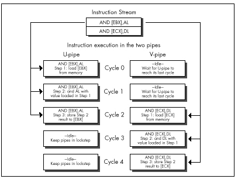
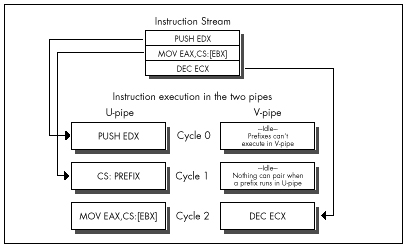

Figure 20.7 Interleaving simple instructions for maximum performance.
| Previous | Table of Contents | Next |
However, this beneficial pairing does not extend to non-MOV instructions with explicit memory destination operands, such as ADD [EBX],EAX. The Pentium executes only one such memory instruction at a time; if two memory-destination complex instructions get paired, first the U-pipe instruction is executed, and then the V-pipe instruction, with only one cycle of overlap, as shown in Figure 20.6. I don’t know for sure, but I’d guess that this is to guarantee that the two pipes will never perform out-of-order access to any given memory location. Thus, even though AND [EBX],AL pairs with AND [ECX],DL, the two instructions take 5 cycles in all to execute, and 4 cycles of idle time—2 in the U-pipe and 2 in the V-pipe, out of 10 cycles in all—are incurred in the process.

Figure 20.6 Non-overlapped lockstep execution.
Figure 20.7 Interleaving simple instructions for maximum performance.
The solution is to break the instructions into simple instructions and interleave them, as shown in Figure 20.7, which accomplishes the same task in 3 cycles, with no idle cycles whatsoever. Figure 20.7 is a good example of what optimized Pentium code generally looks like: mostly one-cycle instructions, mixed together so that at least two operations are in progress at once. It’s not the easiest code to read or write, but it’s the only way to get both pipes running at capacity.
You may well ask why it’s necessary to interleave operations, as is done in Figure 20.7. It seems simpler just to turn
and [ebx],al
into
mov dl,[ebx] and dl,al mov [ebx],dl
and be done with it. The problem here is one of dependency. Before the Pentium can execute AND DL,AL,, it must first know what is in DL, and it can’t know that until it loads DL from the address pointed to by EBX. Therefore, AND DL,AL can’t happen until the cycle after MOV DL,[EBX] executes. Likewise, the result can’t be stored until the cycle after AND DL,AL has finished. This means that these instructions, as written, can’t possibly pair, so the sequence takes the same three cycles as AND [EBX],AL. (Now it should be clear why AND [EBX], AL takes 3 cycles.) Consequently, it’s necessary to interleave these instructions with instructions that use other registers, so this set of operations can execute in one pipe while the other, unrelated set executes in the other pipe, as is done in Figure 20.7.
What we’ve just seen is the read-after-write form of the superscalar hazard known as register contention. I’ll return to the subject of register contention in the next chapter; in the remainder of this chapter I’d like to cover a few short items about superscalar execution.
The above examples should make it pretty clear that effective superscalar programming puts a lot of strain on the Pentium’s relatively small register set. There are only seven general-purpose registers (I strongly suggest using EBP in critical loops), and it does not help to have to sacrifice one of those registers for temporary storage on each complex memory operation; in pre-superscalar days, we used to employ those handy CISC memory instructions to do all that stuff without using any extra registers.
 | More problematic still is that for maximum pairing, you’ll typically have two operations proceeding at once, one in each pipe, and trying to keep two operations in registers at once is difficult indeed. There’s not much to be done about this, other than clever and Spartan register usage, but be aware that it’s a major element of Pentium performance programming. |
Also be aware that prefixes of every sort, with the sole exception of the 0FH prefix on non-short conditional jumps, always execute in the U-pipe, and that Intel’s documentation indicates that no pairing can happen while a prefix byte executes. (As I’ll discuss in the next chapter, my experiments indicate that this rule doesn’t always apply to multiple-cycle instructions, but you still won’t go far wrong by assuming that the above rule is correct and trying to eliminate prefix bytes.) A prefix byte takes one cycle to execute; after that cycle, the actual prefixed instruction itself will go through the U-pipe, and if it and the following instruction are mutually pairable, then they will pair. Nonetheless, prefix bytes are very expensive, effectively taking at least as long as two normal instructions, and possibly, if a prefixed instruction could otherwise have paired in the V-pipe with the previous instruction, taking as long as three normal instructions, as shown in Figure 20.8.
Finally, bear in mind that if the instructions being executed have not already been executed at least once since they were loaded into the internal cache, they can pair only if the first (U-pipe) instruction is not only pairable but also exactly 1 byte long, a category that includes only INC reg, DEC reg, PUSH reg, and POP reg. Knowing this can help you understand why sometimes, timing reveals that your code runs slower than it seems it should, although this will generally occur only when the cache working set for the code you’re timing is on the order of 8K or more—an awful lot of code to try to optimize.
It should be excruciatingly clear by this point that you must time your Pentium-optimized code if you’re to have any hope of knowing if your optimizations are working as well as you think they are; there are just too many details involved for you to be sure your optimizations are working properly without checking. My most basic optimization rule has always been to grab the Zen timer and measure actual performance—and nowhere is this more true than on the Pentium. Don’t believe it until you measure it!

Figure 20.8 Prefix delays.
| Previous | Table of Contents | Next |